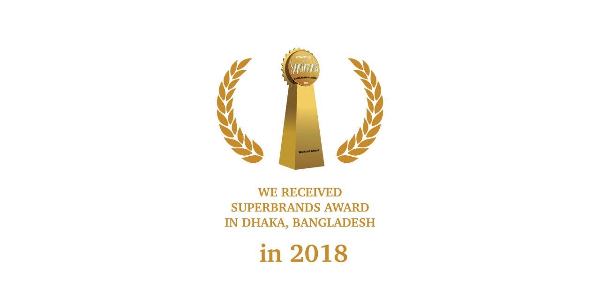
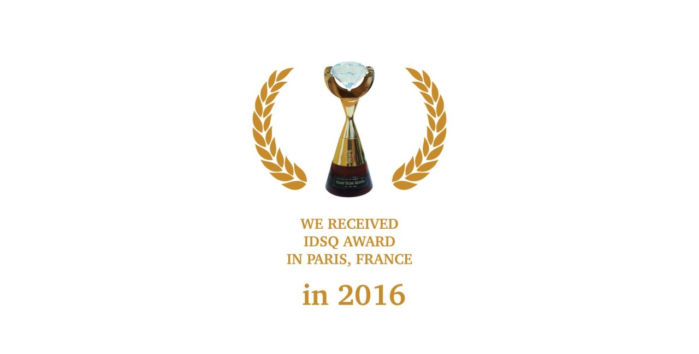
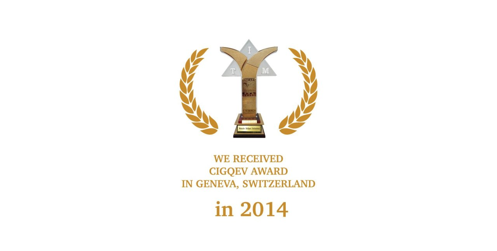
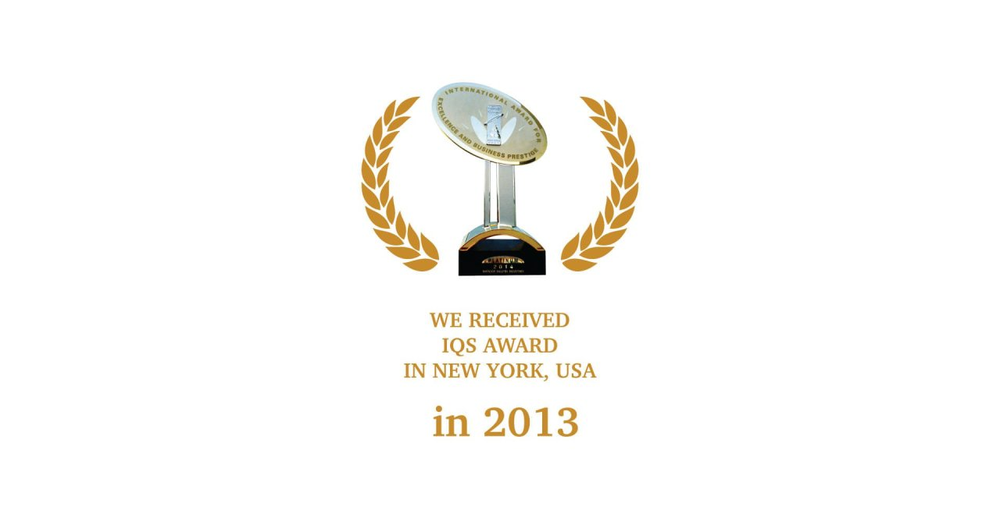
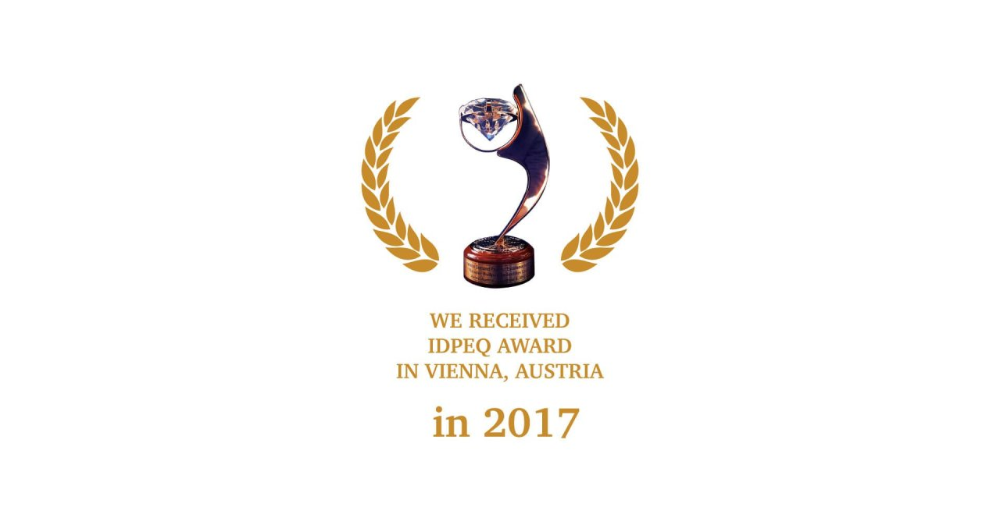

Established in 1998, Matador Ball pen Industries is the largest ball pen manufacturer in Bangladesh. We are proud to say that we are the largest Disposable Pen maker in ASIA having a capacity of making 3 million Disposable pens per day. Apart from disposable pens, we make refillable ball pen and gel pen with various ball diameters and ink colors to meet our customers' requirements.
Matador has created an uncontested marketplace in Bangladesh through value innovation. We have redefined the core value of a pen introducing OIL GEL SYSTEM (OGS) and still developing trendy products innovating various augmented values. Innovative product development has enabled us to serve some MNCs as well as some reputed local and international buyers.
28+
Years of Excellence
500K+
Satisfied Customers
5+
International Awards
Our Awards




